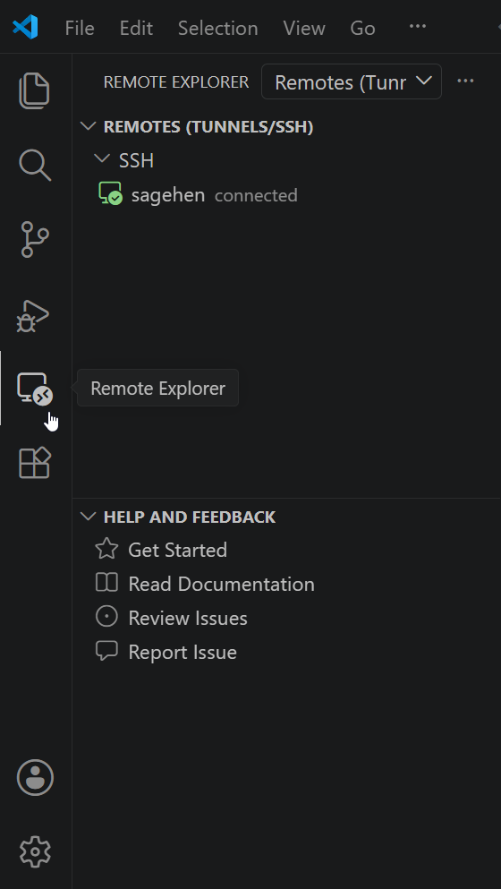
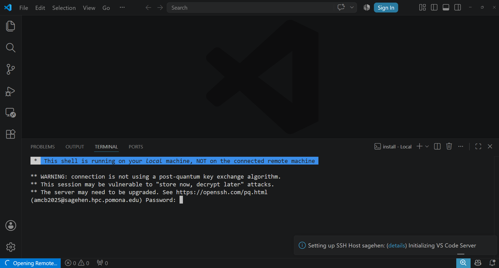
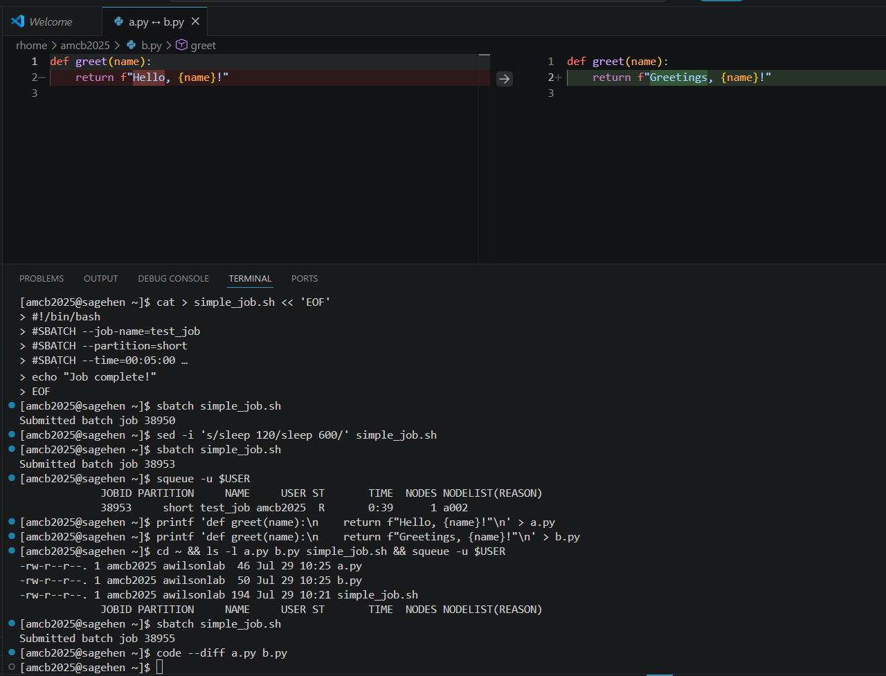
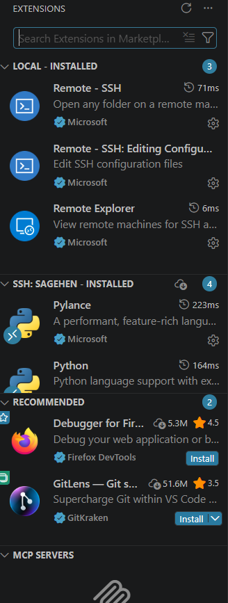

All in One View
Content from Why VS Code Remote?
Last updated on 2026-08-24 | Edit this page
Estimated time: 15 minutes
Overview
Questions
- What is VS Code Remote-SSH and why would I use it?
- How does it compare to other tools for editing remote files?
Objectives
- Understand the benefits of using VS Code for remote HPC work
- Compare VS Code with traditional command-line alternatives
- Identify scenarios where VS Code is the best tool for the job
What is VS Code Remote-SSH?
Visual Studio Code (VS Code) is a lightweight, modern code editor developed by Microsoft. It is free, open-source, and available on Windows, Mac, and Linux.
Remote-SSH is an official Microsoft extension for VS Code that allows you to connect to remote systems (like the Sagehen HPC cluster) and edit files as if they were on your local machine. VS Code runs a server component on the remote system while your local VS Code interface connects to it, giving you full IDE features while working on the cluster.
Key insight: You are not editing files over SSH through a terminal emulator; VS Code creates a true two-way connection with full IDE capabilities.
Comparison with Other Tools
Command-Line Editors vs Modern IDE
nano, vim, emacs
pros: Lightweight, fast, work in any SSH terminal, no
additional software needed.
Cons: Steep learning curve (especially vim), limited visual feedback, no integrated file browser, difficult to manage large projects, no built-in debugging or linting.
When to use: Quick edits to small files, slow connections, or very resource-constrained remote systems.
MobaXterm offers an integrated SSH client and SFTP browser on Windows, but is not a true IDE. OnDemand (Pomona’s web interface at https://ondemand.hpc.pomona.edu) is browser-based and good for job monitoring and launching interactive applications, but has limited code editing.
The VS Code Remote-SSH Workflow
Your Laptop (Local Machine) Sagehen Cluster (Remote)
┌──────────────────────────┐ ┌──────────────────────┐
│ VS Code UI │◄──────►│ VS Code Server │
│ (Editor, Sidebar, etc.)│ SSH │ (Files, Extensions) │
└──────────────────────────┘ └──────────────────────┘
(Your view) (Where code runs)When you open a folder on Sagehen:
- VS Code’s user interface runs on your laptop
- VS Code Server runs on the Sagehen cluster (very lightweight)
- File editing happens locally with VS Code’s full features
- Extensions run on the remote system where they access your files
- The integrated terminal connects directly to the Sagehen login node
Why Pomona Recommends VS Code for HPC
Pomona’s Recommended Tool for HPC Development
Pomona College ITS recommends VS Code Remote-SSH because:
- Consistent environment: Same editor whether working locally or remotely
- Accessibility: Intuitive GUI reduces learning curve vs vim/emacs
- Productivity: Integrated terminal, file browser, debugging, multi-file editing and search
- Extensibility: Python, R, Jupyter extensions enhance HPC workflows
- No licensing costs: Free for everyone
- Cross-platform: Works on Windows, Mac, and Linux
Challenge: Evaluate Your Current Workflow
Think about your current method for editing files on Sagehen:
- What editor or tool do you currently use?
- What aspects of your current workflow frustrate you?
- What features would improve your productivity?
Discuss your answers with a neighbor or the instructor.
Common answers from HPC users:
-
Current tools: Most use
nanoorvimover SSH, or MobaXterm on Windows. - Frustrations: No syntax highlighting, hard to manage multiple files, no integrated file browser, losing work on disconnection.
- Desired features: Auto-complete, side-by-side editing, integrated terminal, easy file upload/download.
VS Code Remote-SSH addresses all of these.
- VS Code Remote-SSH provides a full IDE experience for remote HPC development
- It combines VS Code’s features with direct access to your cluster files
- VS Code is recommended for serious code development; command-line editors are better for quick edits
- The Remote-SSH extension creates a seamless local-to-remote development workflow
Content from Installing VS Code
Last updated on 2026-08-24 | Edit this page
Estimated time: 15 minutes
Overview
Questions
- How do I install VS Code on my operating system?
- How do I install the Remote-SSH extension?
Objectives
- Install VS Code on Windows, Mac, or Linux
- Install and enable the Remote-SSH extension
- Enable the critical DUO MFA setting
Step 1: Install Visual Studio Code
VS Code is free and available on all major operating systems.
Windows
- Visit code.visualstudio.com
- Click the Windows download button (Windows x64 Installer)
- Run the downloaded installer and follow the wizard (defaults are fine)
- Verify: open PowerShell and type
code --version
Mac
- Visit code.visualstudio.com
- Click the Mac download button (choose Intel or Apple Silicon)
- Open the .zip and drag “Visual Studio Code.app” to Applications
- Verify: open Terminal and type
code --version
Linux (Ubuntu/Debian)
BASH
sudo apt update
sudo apt install software-properties-common apt-transport-https wget
wget -q https://packages.microsoft.com/keys/microsoft.asc -O- | sudo apt-key add -
sudo add-apt-repository "deb [arch=amd64] https://packages.microsoft.com/repos/vscode stable main"
sudo apt update && sudo apt install codeVerify: code --version
Linux (Fedora/RHEL)
BASH
sudo rpm --import https://packages.microsoft.com/keys/microsoft.asc
sudo sh -c 'echo -e "[code]\nname=Visual Studio Code\nbaseurl=https://packages.microsoft.com/yumrepos/vscode\nenabled=1\ngpgcheck=1\ngpgkey=https://packages.microsoft.com/keys/microsoft.asc" > /etc/yum.repos.d/vscode.repo'
dnf check-update && sudo dnf install codeStep 2: Install Remote-SSH Extension
- Open VS Code
- Click the Extensions icon on the left sidebar (four squares icon)
- Search for “Remote-SSH”
- Find Remote - SSH by Microsoft (the official one)
- Click Install
You should now see a “Remote Explorer” icon in the left sidebar.
Step 3: Enable Login Terminal for DUO
Essential: Enable Login Terminal for DUO Authentication
Before connecting, you MUST enable one critical setting:
- Open Settings: File > Preferences > Settings (Ctrl+, or Cmd+,)
- Search for:
remote.SSH.showLoginTerminal - Check the checkbox to enable this setting
Why this matters: Sagehen requires DUO MFA. Without this setting, DUO prompts appear in an invisible terminal and you cannot authenticate. This is the number one reason people cannot connect initially.
Challenge: Verify Your Installation
- Run
code --versionin your terminal. Do you get a version number? - Open VS Code and check Extensions. Is “Remote - SSH” installed?
- In Settings, search
remote.SSH.showLoginTerminal. Is it checked?
-
code --versionshould print a version like1.87.2. If “command not found,” VS Code is not installed or not in your PATH. - Remote - SSH should appear in Extensions with an “Installed” badge.
- The checkbox should show a checkmark next to “Show Login Terminal”.
- Install VS Code from code.visualstudio.com for your operating system
- Install the Remote-SSH extension by Microsoft from the Extensions sidebar
- Enable
remote.SSH.showLoginTerminalin settings – this is required for DUO
Content from Setting Up SSH Config
Last updated on 2026-08-24 | Edit this page
Estimated time: 20 minutes
Overview
Questions
- What SSH configuration do I need for Sagehen?
- How do I set up SSH keys for passwordless authentication?
Objectives
- Configure ~/.ssh/config with proper Sagehen credentials
- Set correct file permissions on SSH files
- Optionally generate SSH keys (Ed25519 recommended)
- Verify SSH connectivity from the terminal
Create or Edit ~/.ssh/config
VS Code Remote-SSH uses your system’s SSH configuration to connect.
You need an entry for Sagehen in ~/.ssh/config.
On Windows (PowerShell):
POWERSHELL
New-Item -ItemType Directory -Force -Path $HOME\.ssh | Out-Null
notepad $HOME\.ssh\configOn Mac/Linux (Terminal):
Add the Sagehen Entry
SSH Configuration for Sagehen
Add this to your ~/.ssh/config (replace
<myusername> with your Pomona username):
Host sagehen
HostName sagehen.hpc.pomona.edu
User username
ServerAliveInterval 300
ServerAliveCountMax 2| Setting | Purpose |
|---|---|
Host sagehen |
Friendly name for the connection |
HostName sagehen.hpc.pomona.edu |
Actual cluster address |
User username |
Your Pomona username |
ServerAliveInterval 300 |
Keep connection alive every 300 seconds |
ServerAliveCountMax 2 |
Disconnect after 2 unanswered keepalives |
Optional: Generate SSH Key
For passwordless connections (DUO still applies), generate an SSH key. Ed25519 is recommended; RSA-4096 is also acceptable.
Generate a key:
Press Enter for default location. You may set a passphrase or leave blank.
Copy to Sagehen (Mac/Linux):
Copy to Sagehen (Windows PowerShell):
Test Your SSH Connection
Before using VS Code Remote-SSH, verify from your terminal:
Expected sequence:
- Password prompt:
<myusername>@sagehen.hpc.pomona.edu's password: - Enter your Pomona password
- DUO prompt appears
- Complete DUO authentication
- You see:
[<myusername>@sagehen-login-1 ~]$
Type exit to disconnect.
If this fails: Check your username in
~/.ssh/config, verify Pomona credentials and DUO
registration, and contact its-hpc@pomona.edu if needed.
Challenge: Verify SSH Configuration
- Open
~/.ssh/configand check the sagehen entry - Run
ssh -G sagehento display your effective SSH configuration - Run
ssh sagehenand complete DUO authentication - Once connected, run
uname -aandwhoami, thenexit
ssh -G sagehen should show:
hostname sagehen.hpc.pomona.edu
user yourname
serveraliveinterval 300
serveralivecountmax 2
ssh -G sagehen filtered through
Select-String.After connecting, uname -a shows a Linux kernel version
and whoami shows your Pomona username. If
whoami returns the wrong name, fix the User
line in ~/.ssh/config. If the connection hangs at the DUO
two-factor login prompt, verify DUO registration.
- Configure ~/.ssh/config with a
Host sagehenentry and your Pomona username - Set proper file permissions (600 for config, 700 for .ssh directory)
- SSH keys (Ed25519 recommended) are optional but convenient for frequent users
- Always test
ssh sagehenfrom a terminal before using VS Code Remote-SSH
Content from Connecting to Sagehen
Last updated on 2026-08-24 | Edit this page
Estimated time: 20 minutes
Overview
Questions
- How do I connect to Sagehen using VS Code Remote-SSH?
- How do I handle DUO authentication in VS Code?
- What should I do if I get disconnected?
Objectives
- Connect to Sagehen cluster using Remote-SSH
- Authenticate with DUO MFA through VS Code
- Open a remote folder and browse files
- Handle disconnections and reconnect
Your First Connection
Step 1: Open the Remote Explorer

sagehen host from your SSH config, shown here already
connected.Click the Remote Explorer icon in the left sidebar.
You should see “sagehen” listed from your ~/.ssh/config. If
not, click the “+” icon to add a new SSH target and enter
sagehen.hpc.pomona.edu.
Step 2: Connect
- Hover over “sagehen” in the Remote Explorer
- Click the connect icon (arrow pointing to a folder)
- A new VS Code window opens
- Select Linux when prompted for platform
- Click Yes, I trust the authors if a trust dialog appears
Step 3: DUO Authentication

Completing DUO Authentication in VS Code
A terminal window appears at the bottom of VS Code:
- Enter your Pomona password at the password prompt
- At the DUO prompt, type a 6-digit code from your DUO app, or type “call”
- Complete the authentication
After success, the terminal closes and VS Code shows “SSH: sagehen” in the bottom-left status bar.
Opening Your Remote Folder
- Click File > Open Folder (or Ctrl+K Ctrl+O / Cmd+K Cmd+O)
- Navigate to
/rhome/<myusername>(your home directory) - Click Open
The Explorer sidebar now shows your remote files on Sagehen.
Connection States and Reconnection
| State | Indicator | Action |
|---|---|---|
| Connected | Green “SSH: sagehen” | Working normally |
| Connecting | Blue/spinning | Wait 5-10 seconds |
| Reconnecting | Blue | VS Code auto-reconnects (~5 min) |
| Offline | Red/disconnected | Fix network, click Reconnect |
If automatic reconnection fails:
- Click the SSH status button (bottom-left)
- Select “Close Remote Connection”
- Wait a few seconds, then reconnect from Remote Explorer
For extended disconnections, close VS Code entirely, reopen, and reconnect through Remote Explorer. You will need to re-authenticate with DUO.
Disconnecting When Done
- Click the “SSH: sagehen” button (bottom-left)
- Select “Close Remote Connection”
Your files on Sagehen remain unchanged.
Challenge: Connect, Explore, and Reconnect
- Connect to Sagehen from Remote Explorer
- Open your home folder (
/rhome/<myusername>) - Browse some folders in the Explorer sidebar
- Disconnect (SSH button > Close Remote Connection)
- Reconnect and verify “SSH: sagehen” reappears
Success indicators:
- Bottom-left shows green “SSH: sagehen” button
- Explorer sidebar shows your home directory contents
(
.bashrc, project folders) - Opening a terminal (Ctrl+`) shows
[<myusername>@sagehen-login-1 ~]$ - After reconnecting, the green indicator returns (faster than first connection since VS Code Server is already installed)
If no DUO prompt appears, verify
remote.SSH.showLoginTerminal is enabled.
- Use Remote Explorer to connect to Sagehen and select Linux as the platform
-
remote.SSH.showLoginTerminalmust be enabled for DUO prompts to appear - After connecting, open
/rhome/<myusername>to browse your remote files - VS Code automatically attempts reconnection after network interruptions
- Disconnect via the SSH status button when finished
Content from File Editing Basics
Last updated on 2026-08-24 | Edit this page
Estimated time: 15 minutes
Overview
Questions
- How do I create and edit files on the remote cluster?
- What are VS Code’s core editing features?
Objectives
- Create, open, edit, and save files on Sagehen
- Use syntax highlighting and code completion
- Navigate files with Quick Open and Go to Line
- Upload files from your local computer via drag-and-drop
The Remote File Browser
The Explorer sidebar displays your remote file system. Click arrows to expand folders. Hover over a file to see its full path and size.
Creating Files
Explorer sidebar: Right-click > New
File, type the filename (including extension like
script.py), press Enter.
Keyboard: Ctrl+Alt+N (Windows/Linux) or Cmd+Shift+N (Mac).
File menu: File > New File, then save with Ctrl+S and choose location.
Opening Files
- Single-click a file in Explorer to preview it (shown in italics)
- Double-click to open for editing
Pro Tip: Use Quick Open for Speed
Press Ctrl+P (or Cmd+P on Mac), start typing the filename, and VS Code shows matching files. This is the fastest way to navigate large projects.
Use Ctrl+G to jump to a specific line number.
Editing Features
- Syntax highlighting: VS Code detects file type and colors code accordingly (Python, R, Markdown, C/C++, and many more)
- Code completion (IntelliSense): Suggestions appear as you type. Press Ctrl+Space to trigger manually.
- Line numbers: Click a line number to select the entire line
Saving Files
| Action | Windows/Linux | Mac |
|---|---|---|
| Save | Ctrl+S | Cmd+S |
| Save All | Ctrl+Shift+S | Cmd+Shift+S |
| Auto Save | File > Auto Save | File > Auto Save |
Files save to Sagehen, not your local machine.
Uploading Files from Your Computer
Drag-and-Drop Upload
Drag files from your local file explorer (Windows Explorer, Finder) into the VS Code Explorer sidebar. They upload directly to Sagehen in the currently open folder. Multiple files can be dragged at once.
The file tab shows hello_world.py without a dot
(indicating saved). Python syntax highlighting colors
#!/usr/bin/env python3 in one color, the docstring in
another, and print as a built-in keyword. Verify the file
exists on Sagehen by opening the terminal (Ctrl+`) and running
ls -l hello_world.py.
If there is no syntax highlighting, the Python extension may not be installed yet (covered in the Extensions episode).
- Use the Explorer sidebar or Quick Open (Ctrl+P) to navigate remote files
- Create files with right-click > New File or keyboard shortcuts
- VS Code provides syntax highlighting and IntelliSense automatically
- Save with Ctrl+S; files save to Sagehen, not your local machine
- Drag files from your computer into the Explorer sidebar to upload them
Content from Multi-File Editing
Last updated on 2026-08-24 | Edit this page
Estimated time: 20 minutes
Overview
Questions
- How do I work with multiple files at once?
- How do I search and replace across my project?
Objectives
- Use tabs and split editor for side-by-side editing
- Search and replace within a file and across all files
- Compare two files side-by-side with diff view
- Manage project folder structure from VS Code
Working with Tabs
Each open file appears as a tab at the top of the editor:
| script.py | data.csv | README.md |- Click a tab to switch files
- Click the X on a tab to close it
- Use Ctrl+Tab to cycle through open files
Split Editor View
For side-by-side editing, press Ctrl+\ (Windows/Linux) or Cmd+\ (Mac):
| script.py | | analysis.py |
─────────────────────────────────────────
# script.py content # analysis.py contentYou can have up to four splits. Drag tabs between splits to rearrange.
Searching and Replacing
Comparing Files
- Open both files
- Right-click one file tab > Compare with…
- Select the other file
Differences display side-by-side: green for added lines, red for removed, and orange for modified lines.

File Management
From the Explorer sidebar you can:
- Create folders: Right-click > New Folder
- Rename: Right-click > Rename
- Delete: Right-click > Delete (permanent on the remote system)
- Move: Drag files between folders
Keyboard Shortcuts Reference
| Action | Windows/Linux | Mac |
|---|---|---|
| Quick Open | Ctrl+P | Cmd+P |
| Find in file | Ctrl+F | Cmd+F |
| Find/Replace in file | Ctrl+H | Cmd+H |
| Find in all files | Ctrl+Shift+F | Cmd+Shift+F |
| Split editor | Ctrl+\ | Cmd+\ |
| Close file | Ctrl+W | Cmd+W |
| Go to line | Ctrl+G | Ctrl+G |
Challenge: Side-by-Side Editing and Search
After splitting, two editor panes appear side by side. Both files have Python syntax highlighting. Using Ctrl+Shift+H opens the sidebar search-and-replace which operates across all files in the workspace. After “Replace All,” every instance of “Hello” changes to “Greetings”. Use Ctrl+Z in each file to undo – each file tracks its own undo history independently.
- Open files appear as tabs; use Ctrl+Tab to switch between them
- Split editor (Ctrl+\) enables side-by-side editing of two or more files
- Ctrl+F searches the current file; Ctrl+Shift+F searches across all files
- Compare files with right-click > Compare to see color-coded differences
- Manage folders and files directly from the Explorer sidebar
Content from Integrated Terminal
Last updated on 2026-08-24 | Edit this page
Estimated time: 35 minutes
Overview
Questions
- How do I use the integrated terminal in VS Code?
- How do I submit and monitor SLURM jobs from VS Code?
- How do I use multiple terminal panes for the edit-submit-monitor workflow?
- How do I activate conda environments and load modules cleanly?
Objectives
- Open and use VS Code’s integrated terminal on Sagehen
- Run SLURM commands (sbatch, squeue, scancel, seff)
- Use multiple terminal tabs and split terminals for parallel workflows
- Configure a custom terminal profile that auto-loads your conda environment
- Recover gracefully from disconnects and dropped sessions
Why the Integrated Terminal Matters for HPC
When you connect to Sagehen with VS Code Remote-SSH, the editor pane edits files on the cluster but does not, on its own, give you a way to run commands there. The integrated terminal is the bridge. It opens a real shell on the Sagehen login node, in the same SSH session your editor is using. That means everything you type in the terminal sees exactly the files you are editing, with no synchronization step.
This tight coupling is the entire reason VS Code Remote-SSH is more productive for HPC work than editing locally and rsyncing changes. The code you save is immediately the code you can run. The job you submit immediately reads the script you just changed.
Opening the Terminal
Press Ctrl+` (backtick, the key above Tab on most keyboards) to open the integrated terminal. When connected to Sagehen, the prompt confirms you are on the cluster:
<myusername>@sagehen-login-1:~$This is your Sagehen login node shell. The terminal starts in your
home directory (/rhome/<myusername>). Your usual
.bashrc or .zshrc runs, so any aliases, PATH
additions, or module load lines you have configured take
effect.
Login node etiquette
The integrated terminal runs on the login node, not
a compute node. The login node is shared by every Sagehen user and is
meant for editing, submitting jobs, light file operations, and small
tests. Do not run heavy compute, training, or data processing in this
terminal. If you need an interactive compute environment, request one
with srun --partition=short --time=00:30:00 --pty bash and
the terminal will move to a compute node for the duration of that
session.
Running SLURM Commands
The five commands you will use most:
Cancel a job and check history
BASH
scancel 12345 # Stop one job immediately
scancel -u $USER # Stop all of your jobs (use with care)
sacct -u $USER --format=jobid,jobname,state,elapsed,maxrss # Recent jobs
seff 12345 # CPU and memory efficiency of completed jobseff is the unsung hero of resource tuning. After a job
completes, seff JOBID reports actual CPU efficiency, memory
used vs requested, and wall time. Running it on every completed job for
a week will reshape how you write SLURM scripts; most users overestimate
memory by 4 to 10x.

seff on a finished test job:
near-zero CPU and memory efficiency is your cue to shrink the next
request. (This example ended in TIMEOUT because the test deliberately
overran its 5-minute limit.)Multiple Terminals for the Real Workflow
A single terminal forces you to choose between editing focus and monitoring focus. Multiple terminals let you do both at once.
Multiple terminal tabs
Click the + icon next to the terminal name to open additional terminals. Each is an independent shell on Sagehen.
A common configuration: one terminal for submitting jobs, a second
for watch squeue -u $USER to see queue state update every 2
seconds, a third running tail -f slurm-*.out to watch the
active job’s output.
Split terminal
Right-click the terminal area and choose Split Terminal, or press Ctrl+Shift+5, to put two shells side-by-side in the same panel. Both run independently on Sagehen. This is especially useful when you want to compare two log files or two job outputs at the same time without flipping tabs.
Custom Terminal Profiles
By default, the integrated terminal runs bash (or
zsh) with your default profile. You can define custom
profiles that auto-activate a conda environment or load specific
modules. Open Settings (Ctrl+,) and search for
“terminal.integrated.profiles.linux”, then click “Edit in
settings.json”:
JSON
"terminal.integrated.profiles.linux": {
"bash (default)": {
"path": "bash"
},
"ml-env": {
"path": "bash",
"args": ["-l", "-c", "module load miniconda3 && conda activate ml_env && exec bash"]
},
"gpu-interactive": {
"path": "bash",
"args": ["-l", "-c", "srun --partition=gpu --gres=gpu:l40s:1 --time=02:00:00 --pty bash"]
}
}Now the + dropdown in the terminal panel offers three profiles. Picking “ml-env” opens a terminal with conda already activated. Picking “gpu-interactive” requests an L40S for 2 hours and drops you into a shell on a compute node.
Login vs interactive vs SLURM-allocated shells
Three different shell types behave differently:
Login shell (default new terminal): runs
.bash_profileand.bashrc. On the shared login node. No GPU access. Good for editing and submitting.Interactive shell with srun: runs on a compute node. Allocated CPU/GPU/memory until you exit. Counts against your job allocation. Good for debugging a job that crashes inside SLURM.
Inside an
sbatchscript: only runs.bashrc, not.bash_profile. If a script that works in your interactive shell fails insidesbatch, the difference is usually a missingmodule loadorconda activatethat lives in.bash_profile. Move it to.bashrcor load it explicitly in the SLURM script.
Recovering from Disconnects
The integrated terminal session lives inside the SSH connection. If your laptop sleeps, the wifi drops, or VS Code closes, the connection breaks. Two strategies for surviving disconnects:
Reconnect quickly
VS Code’s Remote-SSH extension detects the broken connection and offers to reconnect. Most of the time this works and you pick up where you left off, but commands that were running in the terminal at the moment of disconnect are killed.
Use tmux for persistence
For longer interactive sessions where losing the terminal would hurt,
run tmux (preinstalled on Sagehen):
BASH
tmux new -s work # start a session named "work"
# ... do things, run commands ...
# Ctrl+b d to detach (session keeps running)
# Later, after a disconnect:
tmux attach -t work # resume the sessiontmux keeps your shell, processes, and scrollback alive
on the login node even after VS Code disconnects. This is the only
reliable way to run a long-running interactive command (such as
python -i for an analysis session) without fear of losing
it. Note that tmux does not protect SLURM jobs themselves;
those run on compute nodes and are managed by SLURM regardless of your
terminal state.
Terminal Keyboard Shortcuts
| Action | Windows/Linux | Mac |
|---|---|---|
| Toggle terminal | Ctrl+| Cmd+
|
|
| New terminal | Ctrl+Shift+| Cmd+Shift+
|
|
| Split terminal | Ctrl+Shift+5 | Cmd+Shift+5 |
| Switch between terminals | Alt+Up/Down | Cmd+Up/Down |
| Clear screen | Ctrl+L | Cmd+K |
| Kill terminal | (close icon) | (close icon) |
| Reverse search history | Ctrl+R | Ctrl+R |
The Edit-Submit-Monitor Workflow
Integrated Development and Job Monitoring
- Edit your script in the VS Code editor
-
Submit with
sbatchin terminal 1 -
Monitor queue state with
watch squeue -u $USERin terminal 2 -
Tail output with
tail -f slurm-JOBID.outin terminal 3 - Review results when the job completes
- Iterate: edit your script and resubmit
This tight loop is why VS Code Remote-SSH is so productive for HPC work.
Challenge: Submit and Monitor a Job
-
Create
simple_job.shin the editor: In the terminal:
chmod +x simple_job.sh && sbatch simple_job.shOpen a second terminal tab and run
watch -n 2 squeue -u $USERWhen the job runs, open a third tab:
tail -f slurm-*.outAfter completion, run
seff JOBIDto see efficiency
 {alt=‘VS
Code’s terminal panel split into three panes, all connected to Sagehen.
The left pane creates and submits a job script to the short partition,
the middle pane shows squeue output with the job running on node a002,
and the right pane tails the slurm output files ending with Job
complete.’}
{alt=‘VS
Code’s terminal panel split into three panes, all connected to Sagehen.
The left pane creates and submits a job script to the short partition,
the middle pane shows squeue output with the job running on node a002,
and the right pane tails the slurm output files ending with Job
complete.’}
After sbatch, you see “Submitted batch job 12345”. The
watch terminal shows the job with state PD (pending)
briefly and then R (running). The tail terminal shows
“Hello from a005” (or another node) and after 30 seconds “Job
complete!”. seff 12345 reports CPU efficiency near 0% (the
job mostly slept) and memory near 0 KB. This is exactly what
seff is for: identifying jobs that overrequested resources
so you can right-size future submissions.
Challenge: Configure a Conda Profile
Define a custom terminal profile in VS Code that opens a bash shell
with a specific conda environment activated. Verify it works by checking
which python shows the env’s interpreter, not the system
default.
In settings.json:
JSON
"terminal.integrated.profiles.linux": {
"research-env": {
"path": "bash",
"args": ["-l", "-c", "module load miniconda3 && conda activate research-env && exec bash"]
}
}Open the + dropdown in the terminal panel, choose
“research-env”, and run which python. The output should be
/rhome/<myusername>/miniconda3/envs/research-env/bin/python
(or wherever your env lives), not /usr/bin/python3.
If which python still shows the system Python, the most
common cause is that module load miniconda3 did not run
because the profile uses -c instead of -l -c.
The -l makes bash a login shell so it sources
/etc/profile, where the module command is defined.
- The integrated terminal (Ctrl+`) runs on Sagehen, not your local machine
- The login node is for editing and submission only; use srun for interactive compute
- Use sbatch to submit jobs and squeue to check status from the terminal
- Multiple terminal tabs let you edit, submit, and monitor simultaneously
- Custom terminal profiles can auto-load conda envs or request interactive compute nodes
- Use
tmuxto keep interactive sessions alive across VS Code disconnects -
seff JOBIDafter job completion reveals over-provisioned resources - The edit-submit-monitor workflow makes VS Code ideal for iterative HPC work
Content from Running and Debugging Code
Last updated on 2026-08-24 | Edit this page
Estimated time: 20 minutes
Overview
Questions
- How do I run code directly in the VS Code terminal?
- How do I use tmux for persistent sessions?
- What debugging workflows work well on Sagehen?
Objectives
- Run Python and other scripts from the integrated terminal
- Use tmux for sessions that survive disconnections
- Debug code with interactive Python and VS Code tools
- Create complete SLURM job scripts within VS Code
Running Code in the Terminal
A Complete Job Script Workflow
Create the SLURM script in the VS Code editor, then submit from the terminal:
BASH
#!/bin/bash
#SBATCH --job-name=my_analysis
#SBATCH --time=01:00:00
#SBATCH --cpus-per-task=4
#SBATCH --mem=8G
#SBATCH --output=logs/analysis_%j.log
module load miniconda3
python analysis.py --input data.csv --output results.csvAfter submitting, check results:
Using tmux for Persistent Sessions
Session Persistence with tmux
tmux is a terminal multiplexer that keeps sessions running even if VS Code disconnects.
BASH
tmux new-session -s mywork # Create session
# Work in tmux...
# Ctrl+B D to detach (session keeps running)
tmux attach-session -t mywork # Reattach later
tmux list-sessions # See all sessionsUseful tmux commands inside a session:
- Ctrl+B C: Create new window
- Ctrl+B N/P: Next/previous window
- Ctrl+B D: Detach (session continues running)
Debugging Strategies
VS Code debugging
With the Python extension installed (see next episode), you can:
- Set breakpoints by clicking next to line numbers (red dots appear)
- Press F5 to start debugging
- Step through code with F10 (step over) or F11 (step into)
- Inspect variables in the Debug sidebar
This works for code running on Sagehen through the Remote-SSH connection.
Common Debugging Workflow
- Edit
analysis.pyin the VS Code editor - Test with a small dataset in the terminal:
python analysis.py --test - Fix errors visible in the terminal output
- When working, submit the full job:
sbatch run_analysis.sh - Check output:
tail -f logs/analysis_*.log - Iterate as needed
Challenge: tmux and Job Monitoring
- Open the terminal and create a tmux session:
tmux new-session -s workshop - Inside tmux, create a second window with Ctrl+B C
- In window 0, run:
watch -n 5 squeue -u username - Switch to window 1 (Ctrl+B N) for other commands
- Detach from tmux (Ctrl+B D)
- Reattach:
tmux attach-session -t workshop - Verify your watch command is still running
After detaching and reattaching, window 0 still shows the
watch command running with periodic squeue
updates. This demonstrates that tmux sessions persist through VS Code
disconnections. To kill the tmux session when done:
tmux kill-session -t workshop.
- Run quick tests directly in the terminal; submit longer jobs through SLURM
- Use
srunfor interactive GPU sessions for prototyping - tmux sessions persist through disconnections – ideal for long-running monitoring
- VS Code’s debugger works remotely through Remote-SSH with language extensions
- The edit-test-submit cycle is the core HPC development workflow
Content from Extensions for HPC
Last updated on 2026-08-24 | Edit this page
Estimated time: 15 minutes
Overview
Questions
- What extensions enhance my HPC workflow in VS Code?
- How do I install extensions on the remote cluster?
- What is the difference between local and remote extensions?
Objectives
- Understand local vs. remote extensions
- Install recommended extensions for Python, R, and Jupyter
- Configure language-specific extension settings
- Manage extensions across local and remote environments
Local vs. Remote Extensions
Extension Architecture: Where Code Runs Matters
When connected via Remote-SSH, extensions run in two places:
- Local extensions (your laptop): Themes, colors, UI enhancements
- Remote extensions (Sagehen cluster): Code analysis, linting, debugging, language tools
When you install an extension, VS Code tells you which type it is. Language extensions (Python, R, Jupyter) should be installed on the remote side.
Recommended Extensions
Python (Essential for HPC)
Provides syntax highlighting, IntelliSense, linting, debugging, and Jupyter notebook support.
- Click Extensions icon (Ctrl+Shift+X)
- Search “Python” – find Python by Microsoft
- Click Install
- When prompted “Install in SSH: sagehen?” click Yes
R (For statistical computing)
Search “R” by REditorSupport. Install in SSH: sagehen. Provides R syntax highlighting, function documentation, and R console integration.
Jupyter (For notebooks)
Search “Jupyter” by Microsoft. Install in SSH: sagehen. Create
.ipynb files and run notebook cells directly on Sagehen’s
compute resources.
Essential Extensions Summary
| Extension | Install Location | Purpose |
|---|---|---|
| Python | Remote (SSH: sagehen) | Code analysis and debugging |
| R | Remote | R development |
| Jupyter | Remote | Interactive notebooks |
| GitLens | Local or both | Version control |
| Markdown Preview | Local | Documentation preview |
Extension Configuration
Some extensions benefit from configuration in Settings (Ctrl+,):
Managing Extensions

- View installed extensions: Extensions sidebar shows Local and Remote - SSH: sagehen sections
- Extensions installed remotely stay on Sagehen even when disconnected
- Disable problematic extensions: find them in Extensions, click Disable
- Too many extensions can slow VS Code; keep 5-10 active
Challenge: Install Python and Test IntelliSense
- Install the Python extension on the remote cluster
- Create
test_intellisense.py - Type
importand verify module suggestions appear - Type
math.and see available functions - Hover over
math.sqrtto see its documentation
After typing import, a dropdown lists available modules
(math, os, sys). After
math., functions like sqrt, pi,
ceil appear. Hovering shows the docstring and signature. If
no suggestions appear, press Ctrl+Space to trigger manually, or check
the status bar for a Python version indicator – the extension may still
be loading. Reload with Ctrl+Shift+P > “Reload Window” if needed.
- Remote extensions run on Sagehen for language support; local extensions handle UI
- Install Python, R, and Jupyter on the remote side for full language features
- Extensions persist on Sagehen between sessions
- Keep 5-10 extensions active to maintain VS Code performance
Content from Customization and Tips
Last updated on 2026-08-24 | Edit this page
Estimated time: 15 minutes
Overview
Questions
- How do I customize VS Code’s appearance and keyboard shortcuts?
- What workspace settings help HPC development?
- How do I sync settings across machines?
Objectives
- Customize color themes, icons, and keyboard shortcuts
- Create workspace settings for HPC projects
- Use Settings Sync to keep configurations consistent
- Apply recommended settings for productive HPC work
Color Themes
- Press Ctrl+K Ctrl+T (or File > Preferences > Color Theme)
- Preview themes by arrowing through the list
- Press Enter to select
Popular themes for long coding sessions: Dark Modern (default), Dracula, Nord, One Dark Pro.
Install additional themes from the Extensions marketplace by searching “theme.”
File Icon Themes
File > Preferences > File Icon Theme. Icons help identify file types at a glance in the Explorer sidebar.
Keyboard Shortcuts
View and customize shortcuts at Ctrl+K Ctrl+S (or File > Preferences > Keyboard Shortcuts).
To change a shortcut:
- Search for the command
- Click the pencil icon
- Press your desired key combination
- VS Code saves it immediately
Workspace Settings
Create project-specific settings that override global defaults:
- In your project folder, create
.vscode/settings.json - Add settings:
JSON
{
"editor.formatOnSave": true,
"editor.autoSave": "afterDelay",
"editor.autoSaveDelay": 2000,
"files.trimTrailingWhitespace": true,
"files.insertFinalNewline": true,
"[python]": {
"editor.defaultFormatter": "ms-python.python",
"editor.formatOnSave": true
},
"terminal.integrated.scrollback": 5000
}These settings apply only in this workspace and can be version-controlled with your project.
Settings Sync
Sync your VS Code configuration across multiple computers:
- Click the account icon in the bottom-left
- Sign in with Microsoft or GitHub account
- VS Code syncs extensions, settings, keybindings, and themes
Recommended Settings for HPC
Productivity Tips
- Keep the terminal visible: Resize editor so the terminal always shows
-
Use descriptive job names:
#SBATCH --job-name=analysis_v2 -
Redirect output:
2>&1 | tee output.logsaves and displays output -
Check resources: Run
sinfoto see available nodes and partitions -
Use file watchers carefully: Large remote
directories can slow VS Code; exclude
node_modules,.git, and large data directories in settings
Additional Extensions Worth Exploring
- Better Comments: Highlight TODO, HACK, BUG comments in code
- Bracket Pair Colorizer: Color-code nested brackets
- Path Intellisense: Auto-complete file paths
- Live Share: Collaborative real-time coding
Challenge: Personalize Your VS Code
- Open Command Palette (Ctrl+Shift+P) and type “Color Theme”
- Try three themes and pick your favorite
- Open Keyboard Shortcuts (Ctrl+K Ctrl+S)
- Search “Go to Line” and note (or customize) its shortcut
- Create
.vscode/settings.jsonin your project folder with at leastformatOnSaveandtrimTrailingWhitespaceenabled
After selecting a theme via Ctrl+Shift+P > “Color Theme,” the
change takes effect immediately. “Go to Line” defaults to Ctrl+G.
Creating .vscode/settings.json with
"editor.formatOnSave": true means your code auto-formats on
every save. Changes take effect immediately without restart.
If Settings Sync is enabled, these preferences carry to other machines automatically.
- Customize themes with Ctrl+K Ctrl+T; customize shortcuts with Ctrl+K Ctrl+S
- Workspace settings in
.vscode/settings.jsonapply per-project and can be version-controlled - Settings Sync keeps your VS Code identical across multiple machines
- Recommended HPC settings include format-on-save, trailing whitespace trimming, and increased terminal scrollback